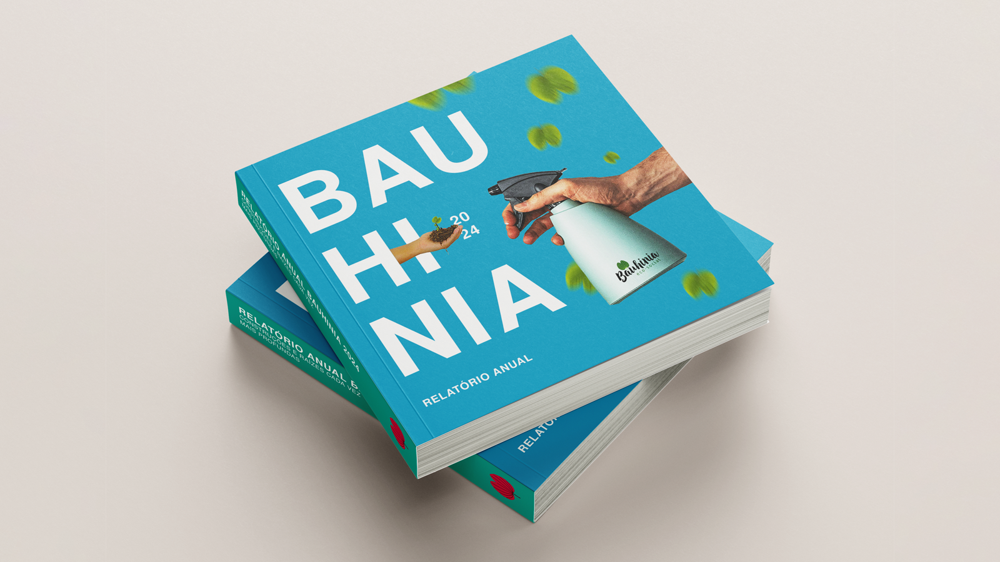

Capa de relatório anual para a Bauhinia eco-social, criada durante a 2ª edição da Imersão Design Gráfico da EBAC. Trabalhei na composição editorial e na tradução visual do briefing.
A entrega é uma proposta de capa para um relatório institucional. A composição utiliza hierarquia, cores e elementos visuais para representar os temas de natureza, sustentabilidade e justiça social do briefing.

Apresentação visual da entrega.
Destaques da entrega
Capa de relatório anual.
Hierarquia visual orientada ao material institucional.
O trabalho resultou na proposta de capa e nas imagens de demonstração. O processo aprofundou a tradução de valores de marca em decisões de composição editorial.
Próxima etapa de validação
Documentar os parâmetros de exportação e avaliar a legibilidade da capa no tamanho final de aplicação.